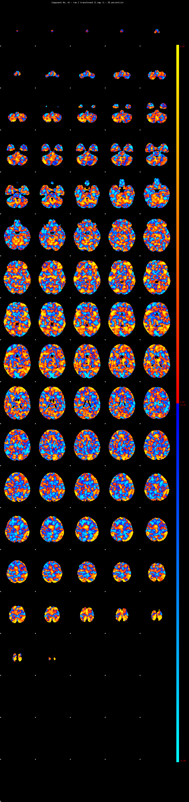
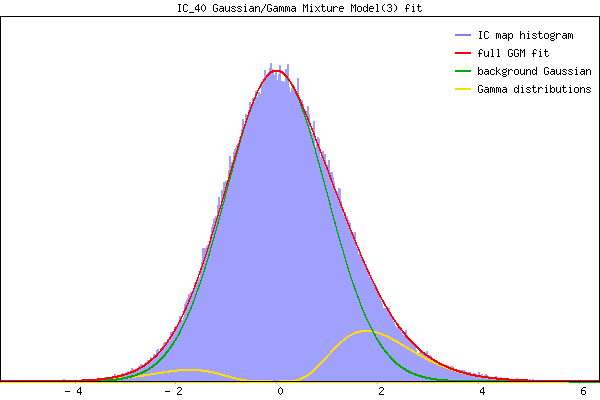

IC_40 Mixture Model fit
Means : 0.000000 3.697449 -3.099438
Vars : 1.000000 3.951815 0.476880
Prop. : 0.950677 0.042844 0.006479
This page produced automatically by MELODIC Version 3.15 - a part of FSL - FMRIB Software Library.